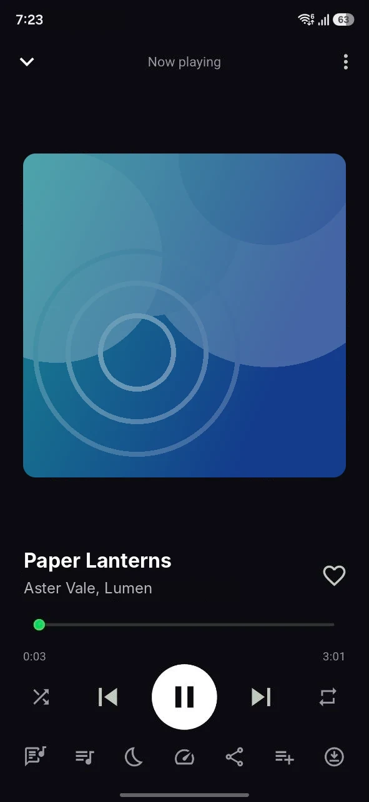
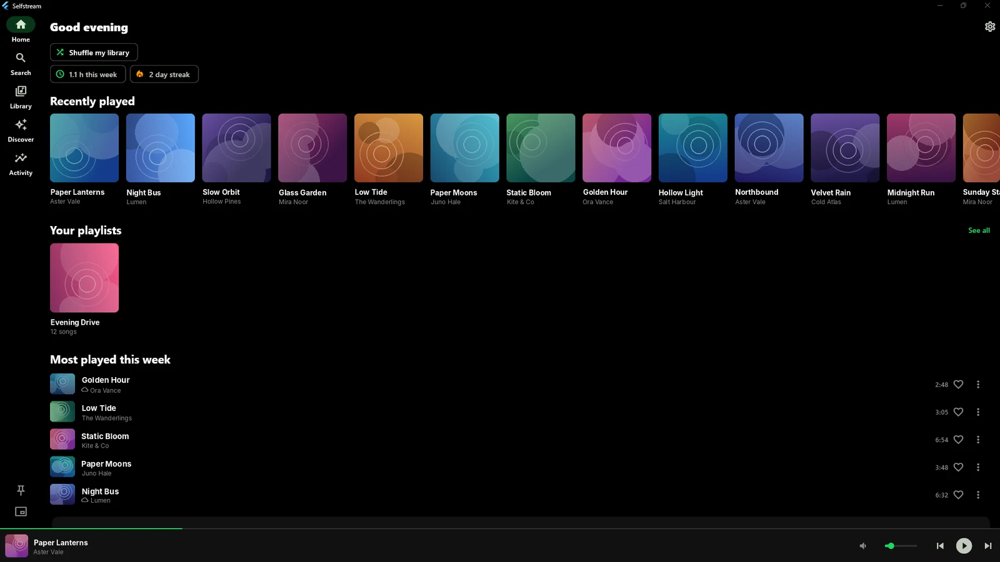
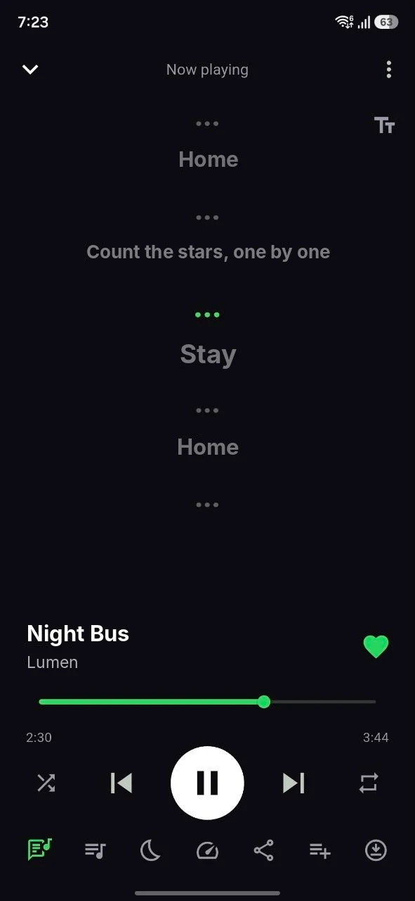
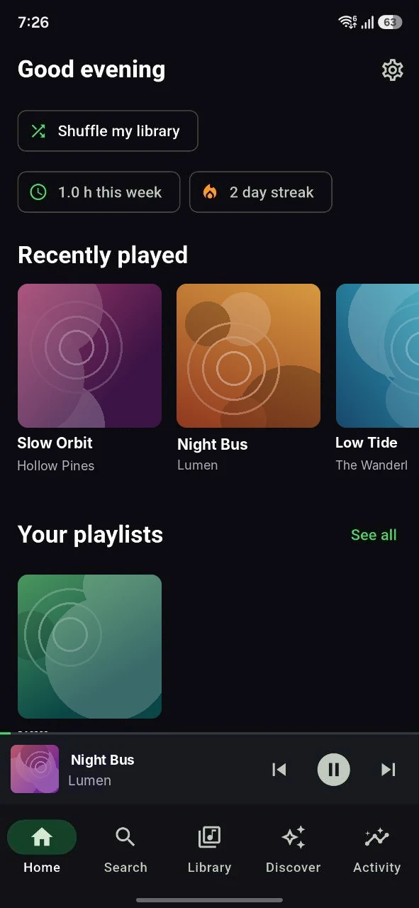
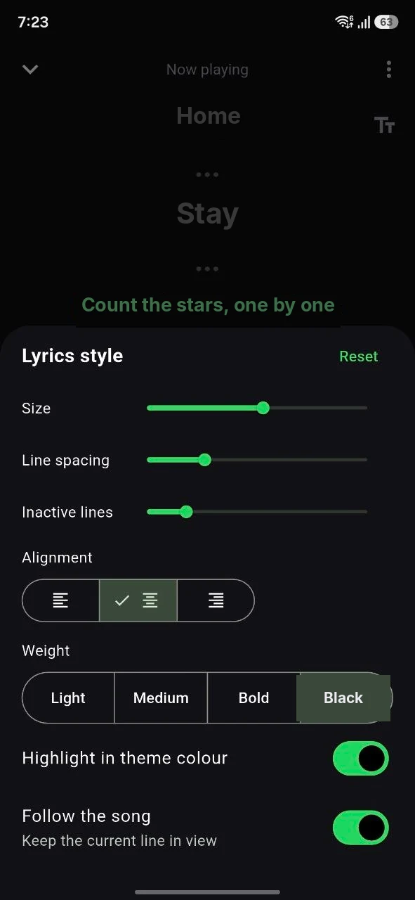
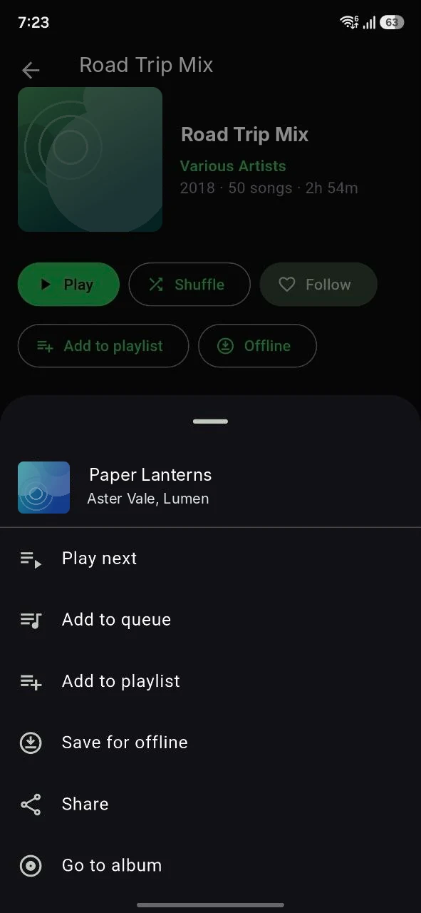
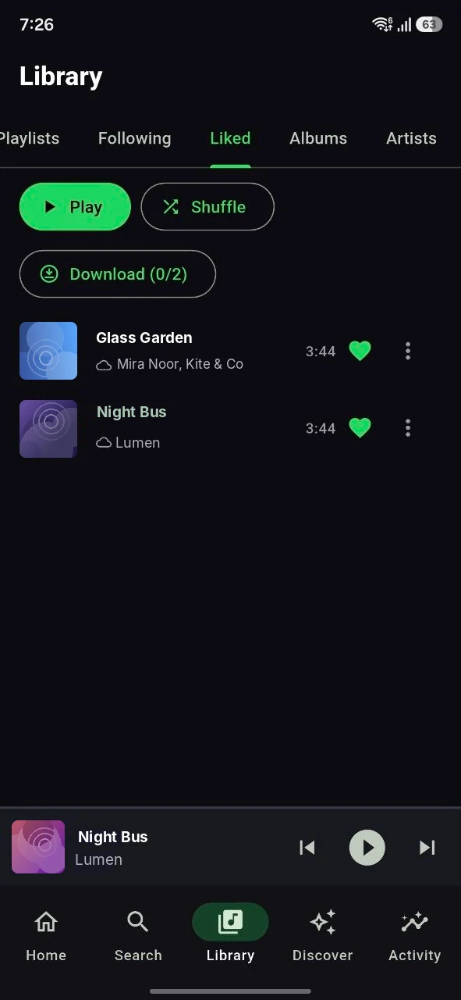
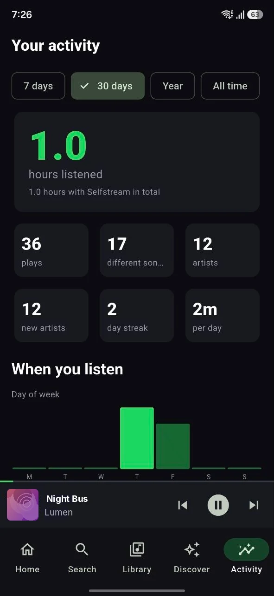
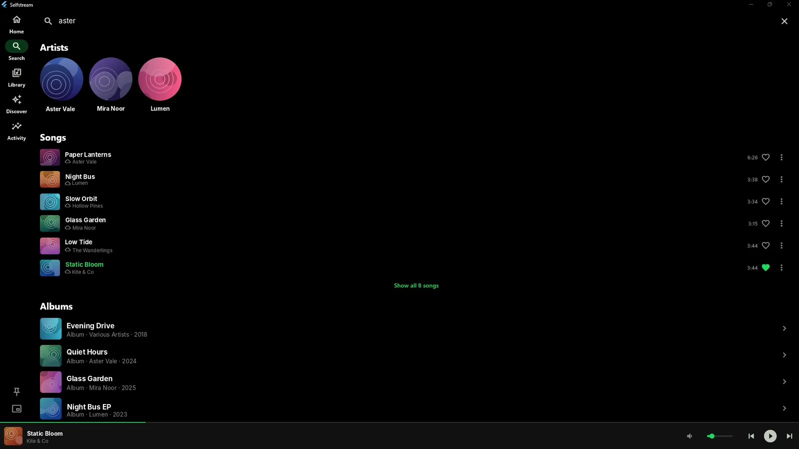
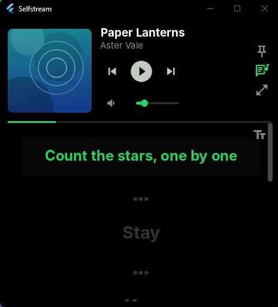

A fast, beautiful player for your own Subsonic-compatible music server. Synced lyrics, offline mode, playlists and listening stats — on Android and Windows.



A Material 3 player built for one-handed use. Swipe through the tour.





The same app, tuned for a big screen: navigation rail, keyboard friendly, and a compact mini player that stays on top.
Jump back into what you were playing, shuffle your whole library with one click, and keep an eye on your weekly listening time and streak.
Artists, songs and albums appear as you type, with the current track highlighted so you always know where you are.


Shrink the app to a small window that can stay pinned above everything else, with playback controls, volume and synced lyrics.
Connects to any Subsonic or OpenSubsonic server such as Navidrome, so your library stays yours.
Wrapped, scrolling lyrics that follow the song, with a full style panel to tune them.
Save songs for offline. If your server is unreachable, cached pages keep working and refresh on reconnect.
Create playlists, like songs and see them everywhere, on every device.
Listening time, streaks and a history of what you played.
Suggestions and follows from an optional companion server, shown in the app when available.
Copy a link to the song you are playing and send it to a friend in a tap.
Colours that follow the artwork, with a dark interface that is easy on the eyes.
Show what you are listening to on Discord, on Windows. Switch it on or off in Settings.